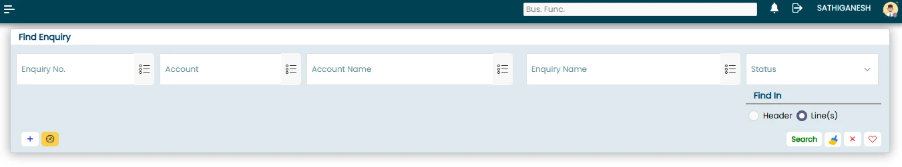
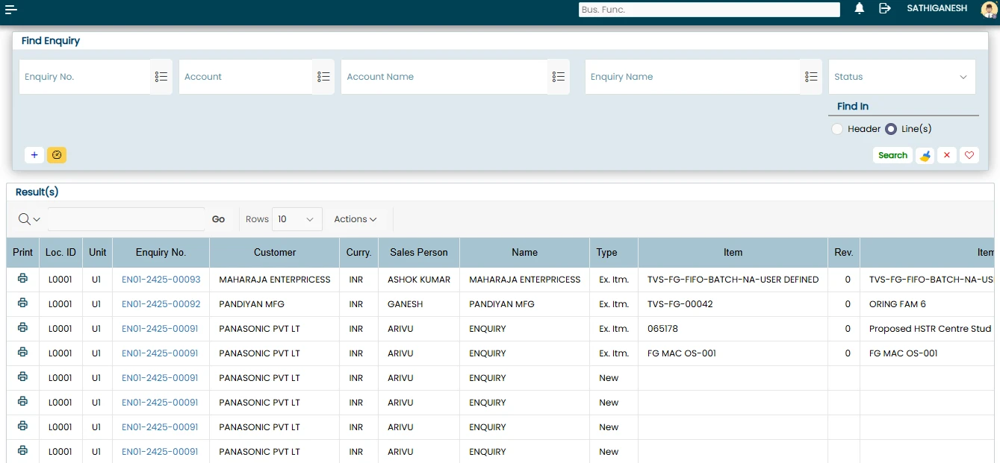
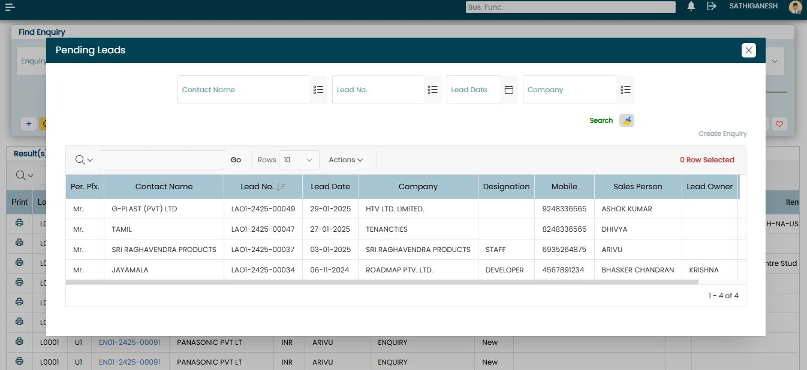
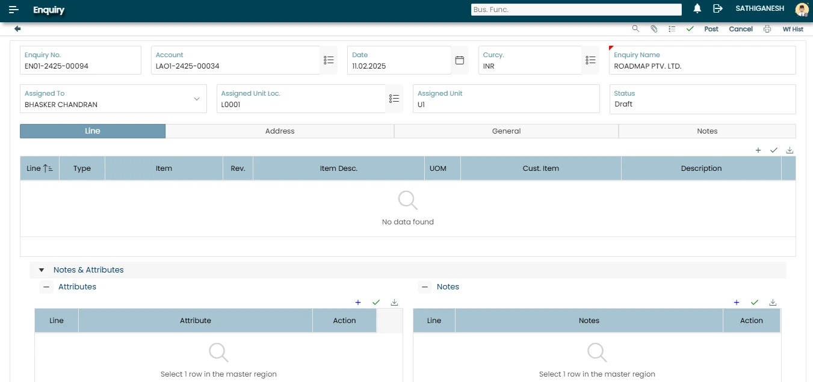
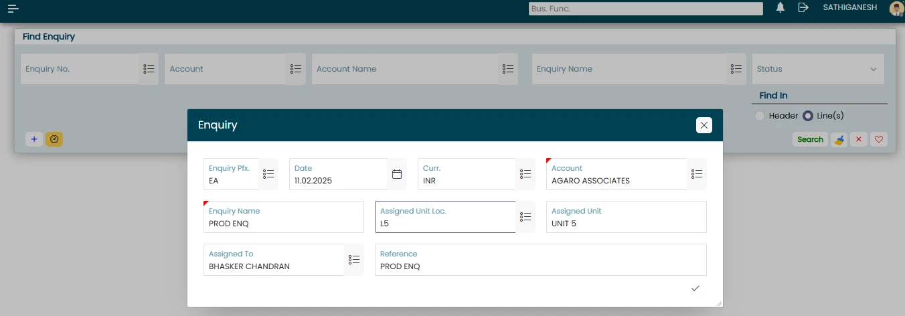
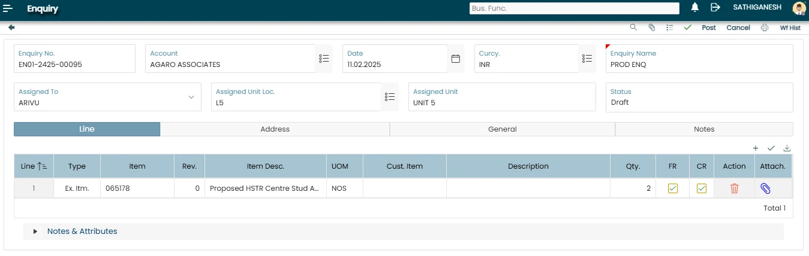

<div data-category="CRM" data-title="Enquiry" data-updated="December 01, 2025" data-contributors="RoadmapIT" data-breadcrumb="Home,CRM,Enquiry">
  <div class="page-content">
    <p>An enquiry refers to a request for information or a question posed by a potential customer about your products or services.</p>
    <p>In Enquiry screen, the customer or Lead can place an inquiry on new item or an existing item. If it is a new item, Feasibility and the cost estimation are done based on the Item placed.</p>
    <h5>Navigation path:</h5>
    <p class="fs-6">CRM \ Transaction \ Enquiry</p>
    
    <ul style="list-style-type: none; align-content: center">
      <li class="mouse-icon">Search screen displays the list of Enquiry with the relevant details and its status</li>
      <li class="mouse-icon">Click on Search to filter all the records</li>
    </ul>
    
    <ul style="list-style-type: none; align-content: center">
      <li class="mouse-icon">User can filter the respective documents by entering the search parameters at the header</li>
      <li class="mouse-icon">On clicking search button, system displays the results relevant to the search parameters entered</li>
      <li class="mouse-icon">Using  icon, entered search parameters can be cleared</li>
      <li class="mouse-icon">To close the screen, use <i class="bi bi-x fs-4 mx-2 text-danger"></i> icon</li>
      <li class="mouse-icon">On clicking Pending Leads button, leads yet to be processed to enquiry are displayed as shown below</li>
    </ul>
    
    <ul style="list-style-type: none; align-content: center">
      <li class="mouse-icon">Filter the Approved Leads with the relevant search fields in the header, leads will be displayed with the following details</li>
      <li class="mouse-icon">Select the Lead and click on Create Enquiry button to create the enquiry</li>
    </ul>
    
    <p class="text-center">(Or)</p>
    <ul style="list-style-type: none; align-content: center">
      <li class="mouse-icon">By Clicking the <i class="bi bi-plus fs-4 mx-2 text-primary"></i> Add button in the find screen, we can create new Enquiry</li>
    </ul>
    
    <ul style="list-style-type: none; align-content: center">
      <li class="mouse-icon">Choose the Doc. Pfx from the LOV</li>
      <li class="mouse-icon">Enter the Date & Choose the Currency</li>
      <li class="mouse-icon">Choose the Account</li>
      <li class="mouse-icon">Enter the Enquiry Name</li>
      <li class="mouse-icon">Select the Assigned Unit Loc., Assigned Unit is auto populated</li>
      <li class="mouse-icon">Choose the Assigned To</li>
      <li class="mouse-icon">Enter the Reference</li>
      <li class="mouse-icon">Click on <i class="bi bi-check-lg fs-4 mx-1 text-success"></i> button to create direct Enquiry</li>
    </ul>
    
    <ul style="list-style-type: none; align-content: center">
      <li class="mouse-icon">Enquiry created is displayed as shown above</li>
      <li class="mouse-icon">Select the type as Ex. Itm. or New. Choose the item and enter qty required</li>
      <li class="mouse-icon">If it was new item Enter the item Description & Qty</li>
      <li class="mouse-icon">Select the Feasibility and cost estimation required or not</li>
      <li class="mouse-icon">If the FR flag is checked Feasibility study will be created for the enquiry</li>
      <li class="mouse-icon">If the CR flag is checked Cost estimation will be created for the enquiry</li>
      <li class="mouse-icon">Click on Post button to create the Enquiry</li>
      <li class="mouse-icon">Select the cancel button to cancel the document </li>
      <li class="mouse-icon">Click Print Button to view the Report</li>
    </ul>
  </div>
</div>